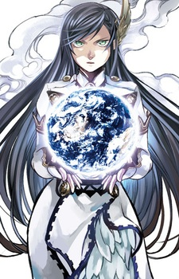
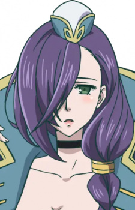

The gods of the world—from Greek to Norse to Hindu mythology—gather every one thousand years to make one important decision: whether or not to wipe out mankind. Repulsed by humanity's selfishness, the council unanimously votes to destroy all humans. But before the decree is enacted, Brunhilde, one of the 13 Valkyries of Valhalla, interrupts the meeting to give mankind a chance at survival.
Brunhilde proposes the idea of enacting Ragnarök, an event in which the strongest 13 mortal warriors fight against 13 gods in one-on-one matches. Although the trial is ridiculed by the gods, the demigod takes advantage of their pride and forces them into an agreement. However, Brunhilde herself must recruit the mightiest heroes throughout humanity's thousand-year history and guide them to victory before they meet their untimely demise.
Shuumatsu no Walküre premiered worldwide exclusively on Netflix on June 17, 2021. The OVA has been dubbed in English by SDI Media; in French by Cinéphase; in German by SDI Media Germany; in Italian; in Portuguese by Unimedia; and in Spanish by SDI Spain.
| Name | Role | Race | Voice Actor | Profile URL | Image |
|---|---|---|---|---|---|
| Brunhilde | Main | Valkyrie | Sawashiro, Miyuki | https://myanimelist.net/character/177543/Brunhilde |  |
| Adam | Supporting | Human | Saitou, Souma | https://myanimelist.net/character/177542/Adam | |
| Hrist | Supporting | Valkyrie | Kobayashi, Yuu | https://myanimelist.net/character/197823/Hrist |  |
| Poseidon | Supporting | God | Sakurai, Takahiro | https://myanimelist.net/character/177550/Poseidon |
To add more characters click here!